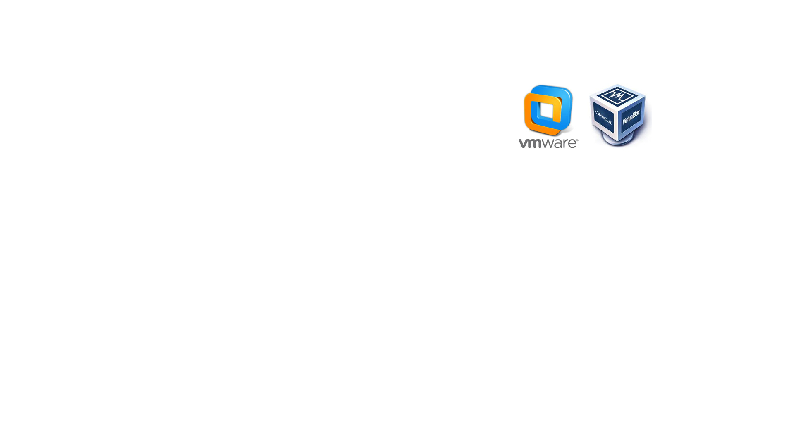

Уніфіковане середовище розробки
- як новачку швидко включитись в проект
Василь Григор’єв, SoftServe
Що ми вирішуємо і для чого це все?
- Створення уніфікованого локального середовища розробки
- Економія часу на налаштування/розгортання проекту
- Джуніори мають таке ж середовище, як і інші девелопери
- Все необхідне підготовлене тими хто робив проект
Локальне середовище
- Рідне середовище (LAMP/MAMP/WAMP/XAMP)
- Віртуальна машина
- Vagrant
Рідне середовище
- працює швидше(?)
- дуже різне залежно від опереційної системи
- софт однаковий, але різне налаштування (важко шарити)
- проекти неізольовані
- оновлення системи може впливати на середовище розробки
Віртуальна машина

- важко шарити образи між членами команди
- зробити оновлення для системи важко для всіх
- шарінг файлів в віртуалку може бути непростою задачею
- якщо одна віртуалка для всіх проектів, то ті ж проблеми що і для рідного середовища
Vagrant
- зайва додаткова OS
- час інсталяції може бути великий
- зміна налаштування забирає час
Коротко про контейнери і як вони працюють?
- ізольовані процеси з заданими ресурсами, запущені на ядрі лінукс
- namespaces - ізоляція процеса, юзерів, точок монтування, хостів
- cgroups - обмеження ресурсів для процесу
То що ж робить Docker?
- керує контейнерами (клієнт/сервер)
- забеспечує (багатошарову) файлову систему
- інструмент для створення, поширення і запуску контейнерів
Термінологія Docker
- Docker хост - лінукс хост на якому запускаються контейнери
- Образ - рідонлі теплейт для файлової системи контейнера
- Контейнер - запущений процес, що використовує образ як темлпейт
Як бути з OS X та Windows? (boot2docker)
- Віртуальна машина на VirtualBox
- використовується TinyCore Linux
- дуже легкий
- мінімум, що необхідний для запуску докер сервера і контейнерів
- контролюється локальним докер-клієнтом
- не потрібний доступ до віртуалки напряму
Docker контейнери на різних ОС
Чому Docker краще?
- швидка інсталяція
- гнучка конфігурація при розділенні на контейнери
- ізольовані проекти
- легко шарити
Docksal
- автоінсталяція необхідних утіліт середовища
- fin - утіліта для упарвління Docksal
- конфігурація для кожного проекту
Інсталяція Docksal
- тільки для Windows: проінсталювати Babun
- проінсталювати fin (фактично скачати скрипт і дати права)
- fin vm start (для Windows і OS X)
Структура папок в Docksal
...
+<projects>
|- drupal-site
| .docksal
| docroot
|- another-drupal-site
| .docksal
| docroot
| ...
- .docksal - папка, що включає конфігурації доксала
- docroot - докрут для вебсервера
Проект в Docksal і Docker контейнери
- мінімально 3 конейнери (web, db, cli)
- можно додати інші (solr, memcached, selenium2)
- або створити і додати свої
Деякі fin команди
- fin start - ініціює новий проект
- fin up - запускає контейнери проекту
- fin drush - виконує drush команду в cli-контейнері в аналогічній папці
- fin bash - запускає термінал в cli-контейнері
- fin help - список доступних команд
Зміна версій софта
змінюємо версію змінивши образ на основі якого запускається контейнер
Легка конфігурація Xdebug для PhpStrom
- Засетити змінну в docksal.env файлі: XDEBUG_ENABLED=1
- Ввімкнути "Incoming Connection From Xdebug" в PhpStrom
Деякі інші можливості
- розширення fin власними командами
- швидкі бекапи завдяки докеру
- докер-сервер може бути на іншому компьютері/сервері
Ресурси/контакти
- https://docksal.io/ - Docksal
- http://vgrygoryev.github.io/docksal-slides/ - ці слайди
- vgryg@softserveinc.com - мій емейл